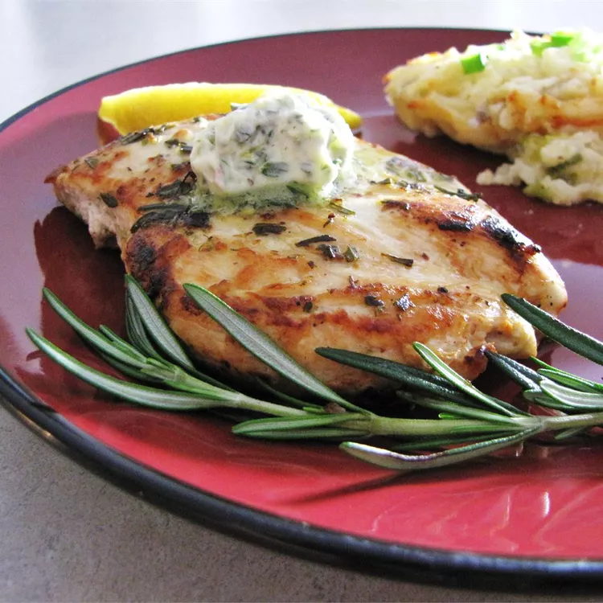

Grilled Chicken
DESCRIPTION
This simple, sensational marinade and sauce for grilled chicken is made with
lemon, garlic, rosemary, and butter. Separate the marinade into thirds: 1/3 for
marinating, 1/3 for basting, and 1/3 for topping.
Ingredients
- ½ cup butter
- ½ cup fresh rosemary
- 3 cloves garlic
- 1 lemon, zested
- ¼ cup fresh lemon juice
- 6 (6 ounce) skinless, boneless chicken breast halves
- salt and pepper to taste
Steps
- In a food processor, blend butter, rosemary, garlic, lemon zest, and lemon juice
- Preheat an outdoor grill for high heat and lightly oil the grate.
- Cook chicken breasts on hot grill, basting with rosemary and lemon basting
Home